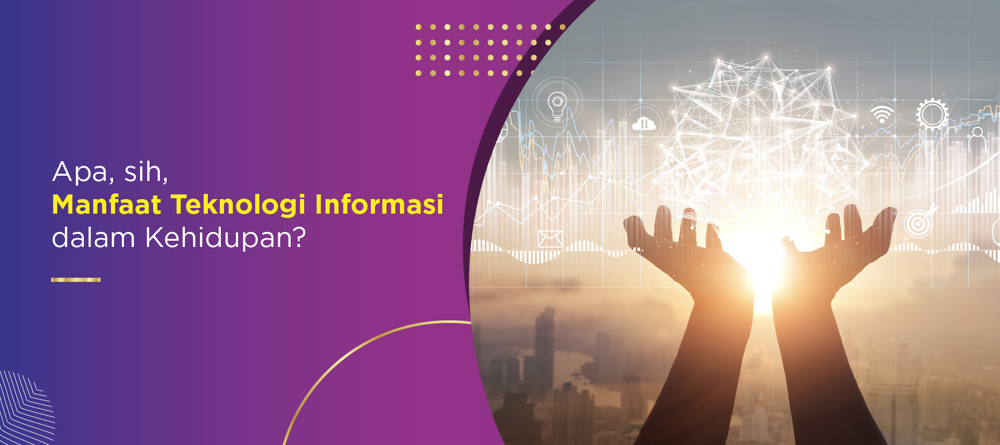

Perkembangan Teknologi Informasi di indonesia?
Perkembangan IT Modern Pada masa kerajaan kuno Hindu-Budha, perkembangan dunia informasi dan komunikasi Indonesia terpengaruh dari India. Sementara di masa modern, perkembangan IT di Indonesia terpengaruh dari penemuan-penemuan yang ada di negara Eropa dan Amerika.
Berikut ini sejarah perkembangan dunia Teknologi Informasi modern di Indonesia sampai sekarang:
1. Radio
Teknologi pertama yang masuk ke Indonesia pada masa modern adalah Radio. Saat itu Indonesia juga masih bernama Nederlands Hindie atau Hindia Belanda. Dengan kata lain, saat itu Indonesia masih berada dalam masa penjajahan oleh Belanda.
Nama radio pertama yang ada di Indonesia adalah Batavia Radio Vereniging yang berlokasi di Batavia (Jakarta). Peresmian radio pertama Indonesia ini dilakukan pada 16 Juni 1925.
Lima tahun sebelum peresmian tersebut, teknologi radio sudah terlebih dahulu ada di Amerika. Kemudian dua tahun selanjutnya disusul oleh Inggris dan Uni Soviet.
Status radio di Indonesia pada waktu itu masih swasta atau belum berbadan pemerintahan. Jadi tidak heran seiring berjalannya waktu juga banyak stasiun radio lainnya bermunculan.
Beberapa stasiun Radio pada waktu itu adalah Solossche Radio Vereniging, Nederlandsch Indische Radio Omroep Masstchapyj, Hineese en Inheemse Radio Luisteraars Vereniging Oost Java, dan stasiun radio lainnya.
Karena banyak stasiun Radio yang tersebar di Indonesia, tidak heran jika teknologi ini digunakan sebagai sarana informasi. Masyarakat Indonesia juga mengetahui kekalahan Jepang pada Perang Dunia II juga dari Radio.
Di satu sisi, Radio juga banyak digunakan sebagai alat untuk mempropagandai peperangan. Salah satunya adalah penyebaran tentang pertempuran Surabaya yang dilakukan oleh Radio Republik Indonesia (RRI).
2. Televisi
Setelah Radio muncul lagi teknologi informasi lainnya yaitu Televisi (TV). Televisi Republik Indonesia (TVRI) menjadi stasiun televisi pertama di Indonesia. Siaran pertamanya berlangsung pada 17 Agustus 1945.
Acara pertama yang disiarkan oleh TVRI adalah peringatan hari kemerdekaan Republik Indonesia yang berlangsung di halaman Istana Merdeka, Jakarta. Karena harga TV pada saat itu masih sangat mahal, hanya segelintir orang saja yang menyaksikan acara tersebut dari televisi.
Satu decade setelah kelahiran televisi, Satelit Palapa diluncurkan. Ini adalah satelit telekomunikasi geostasioner milik Indonesia. Keberadaan satelit itu telah membuat tayangan televisi yang disiarkan oleh RRI semakin bagus.
Di tahun 1963 hingga 1976, RRI memperluas stasiun televisi ke berbagai daerah seperti Yogyakarta, Medan, Makassar, dan kota lainnya.
Status TVRI waktu itu masih berbadan pemerintahan Indonesia, sehingga informasi yang diberikan tidak sepenuhnya netral. Banyak orang yang takut terhadap informasi yang diberikan. Salah satunya adalah memberikan informasi yang hanya satu jalur saja.
Di masalah tersebut muncul banyak stasiun televisi swasta. Pada 24 Agustus 1989 muncul stasiun televisi pertama yang bernama RCTI. Kemudian disusul oleh stasiun televisi swasta lainnya seperti SCTV, ANTV, dan sebagainya.
Seiring berjalannya waktu, keberadaan stasiun swasta semakin merebak di Indonesia. Bahkan keberadaannya sampai sekarang terus meningkat sesuai dengan topik informasi apa yang akan mereka berikan.
3. Internet
Sebenarnya kehadiran televisi ke Indonesia juga dibarengi oleh adanya internet, yaitu pada tahun 1988. Hal ini mengacu pada catatan WHOIS ARIN dan APNIC, protokol internet (IP) pertama dari Indonesia adalah UI-NETLAB (192.41.206/24). IP pertama itu didaftarkan oleh Universitas Indonesia pada 24 Juni 1988.
Keberadaan internet di Indonesia mulai terasa sejak tahun 1990-an. Pada tahun 1994 muncul sebuah perusahaan yang bernama IndoNet. Ini adalah perusahaan ISP komersial pertama di Indonesia.
Pada awalnya internet hanya digunakan sebagai alat keperluan pekerjaan saja dengan menggunakan system email. Tapi seiring berjalannya waktu, internet digunakan untuk keperluan yang lebih kompleks.
Di tahun 2000-an, masyarakat Indonesia sudah mengenal social media sebagai alternatif dari email. Kemudian muncul juga platform penyedia video dan music, sehingga banyak masyarakat yang bisa mengunduhnya.
Keberadaan teknologi informasi internet di zaman sekarang tentu saja sangat penting. Bahkan aktivitas sekolah dan kerja juga lebih mengandalkan internet. Terlebih dalam beberapa waktu ke belakang ini dunia sedang berada dalam kondisi pandemi.
Itulah perkembangan teknologi IT yang terjadi di Indonesia. Perkembangan teknologi informasi di Indonesia sudah ada sejak zaman kerajaan Hindu-Budha yang dipengaruhi oleh kebudayaan India. Sementara untuk perkembangan lebih lanjutnya terjadi di era modern yang terpengaruh dari penemuan di benua Eropa dan Amerika.
Pemanfaatan Teknologi Informasi ?
- Manfaat di dunia telekomunikasi
Manfaat teknologi informasi di dunia telekomunikasi sebenarnya sudah lama dirasakan publik, bahkan terus mengalami kemajuan. Dulu, Anda harus menulis surat saat ingin bertukar kabar dengan kerabat atau teman yang tinggal di luar kota. Sekarang, penerapan teknologi informasi membuat proses tersebut lebih cepat dengan menghadirkan telepon maupun ponsel genggam. Sehingga hanya diperlukan hitungan detik bagi Anda untuk mengirimkan pesan.
- Manfaat di dunia bisnis
Anda sering belanja di marketplace atau media sosial? Tanpa teknologi informasi, kegiatan bisnis yang melibatkan platform online mustahil terjadi. Maka dari itu, sejumlah pelaku bisnis mulai memfokuskan strategi pemasaran mereka dengan mengandalkan teknologi canggih. Sementara bagi konsumen, penerapan teknologi informasi memudahkan mereka saat mencari barang atau jasa yang dibutuhkan dalam waktu cepat dengan harga terjangkau
- Manfaat di bidang pendidikan
Di bidang pendidikan, manfaat teknologi informasi hadir dalam berbagai bentuk. Dari pengolahan data dengan komputer, e-learning, dan pengerjaan tugas berbasis IT. Dampaknya pun semakin terasa di masa pandemi seperti sekarang. Karena Kegiatan Belajar Mengajar tidak bisa dilakukan secara langsung untuk sementara waktu, aktivitas tersebut kini mengandalkan perangkat seperti laptop dan smartphone untuk pengajaran online hingga mengumpulkan tugas.
- Manfaat di bidang kesehatan
Peran teknologi informasi dalam bidang kesehatan berjasa dalam memperbaiki manajemen klinik hingga rumah sakit. Jika dulu staf harus mencatat riwayat kesehatan pasien secara manual dalam berkas, sekarang mereka dapat mengarsipkan semuanya di komputer. Selain itu, saat ada tamu yang mencari kamar atau meminta rincian biaya, staf dapat melakukan pencarian lebih cepat hanya dengan memasukkan data seperti nama pasien untuk mengakses database.